BarbecueNight.com Page 10
The Every Thursday Night Barbecue At Dick Flaharty's
The most recent Thursday, followed by the previous barbecues...
September 2011
As just added on the index page, NOW CONSIDER THIS FIRST.......
This website was first uploaded shortly after fire was invented, which became useful for barbecues and burning fingers. Since then, the humans have learned more knowledge, including the mistake of barbecues.
More knowledge...
If you do not promptly get and watch (twice) the movies, "Forks Over Knives", and "A Beautiful Truth", you are nearly certain to later have a major "oh shit" event that will not be pleasant, and then with that profound incentive, you may belatedly watch the movies that could have easily prevented that major "oh shit" event.
And the incentive is much more than you currently recognize. The US government is about to collapse, and YOU will be adversely affected. The federal systems are bankrupt. There is no useful money in any government system. The DemocanRepublicrat War and Police Regime has printed the paper US Dollar down to pending sudden worthlessness. The government cannot print itself out of the fatal spiral into which it printed itself. The money was already given to foreign military generals, the Military Industrial Complex executives, foreign banks, New York City banksters, and insider cronies who quickly bought gold or other solid investments outside the US. Before the collapse, the desperate government will rob you of everything it can. If it is not in your hand, you will lose it. The power-damaged minds of the top DemocanRepublicrat Regime thugs sincerely believe the Deng Xio Ping maxim of.... "It's us or them." And they have the police and military to take what they perceive they need for survival. If you have a savings account, retirement account, health insurance policy or anything else in a government controlled institution, kiss it good by. The DemocanRepublicrat's new health law is being enforced. Your health insurance policy ends at age 65, and you are enrolled in Medicare, without choice, for which you will pay each month, which is already denying necessary medical treatments for lack of money. The insurance companies who supported the new health law thus got your money during your healthy years, and dump you onto the bankrupt government when you will need the insurance. If you are a young person, learn a readily tradable skill, work hard, stay out of the system, stay away from large cities, watch those two movies, live very modestly, and accumulate gold in a secure hole in the ground.
But there are opportunities. After watching "Forks Over Knives", and "A Beautiful Truth", you can cut the grill off your barbecue, and weld on two wok's. You can even patent it, and make a fortune selling them after distributing free copies of those movies.
Now, fire up the wok-becue, and don't burn your fingers.
18 July 2011
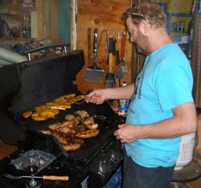
From the Grillmeister hisself.....
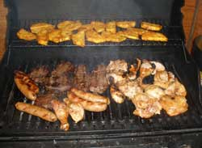
Now, we of the northern eclectic elite who are graced with the finest moose meat for barbecues (ignore the chicken and vegi sausages) are also graced with the world class Fairbanks fresh garden produce that grows on 24 hours of sunlight and fresh moose fertilizer. So here at the Every Thursday Night Barbecue World Headquarters, we get said aforementioned garden produce what shows up at BBQnight. And we enjoy it.
So when the Hawaiian Delegation showed up with the fresh pineapple to put on the grill, we were most delighted with the evening's selection.
In fact, if you show up at BBQnight with any food and wine and adventure story, you will be most welcome.
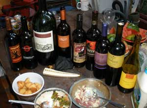
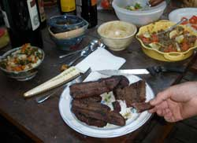
The lecture topic of the evening, if you count the separately conversing groups in the photo, and add the three not in the photo, centered on the eight topics of the universal whole, coming together at BBQnight.
Among them were the popular institutional delusions of the human mind. By what neural process, as such, can a human mind produce the verbal statement, in front of friends and other witnesses, the glaring truth that ALL the politicians lie if their lips are moving, and then that same mind produce the act of voting for any of them, the physical act of undeniably stating that the politician's mind represents the voter's mind, by definition of the act?
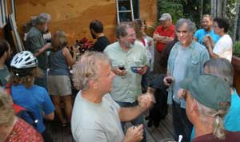
To this very day, tomorrow, and the future, that phenomenon mystifies neurologists who vote for politicians.
In contrast, the BBQnight scholars and intellectuals understand the phenomenon in scientific detail, therein describing the power-damaged mind that from common institutional stimuli, perceives that it is superior to other minds, which can only be by design, which of course is a verifiable impossibility. However, once perceived, nothing can be allowed through the neural maze to question that perception, or the concept of power could not exist in the human mind because the human mind would be able to recognize power's controlling contradiction that illuminates the vast extent of the damages of the perception, which would cause it to warn everybody of the neural process. Do not wonder why nobody normally escapes the voluntarily adopted addiction to institutional "power". Even Frodo could not surrender the ring of power, and had to fumble it in a fight with Golum. Of course, there had to be a process to break the addiction, however extremely rare and requiring great effort, by design of the human mind predicated on the accumulation of knowledge, therein indicating the process.
However, that was only the topic among one of the groups off to the left of the Camera Guy taking the pictures. It being summer in Alaska, one of the other parts of the universal whole being discussed was the whitewater kayaking on a creek so outrageous that even the fish will warn you if you get close.
The other six topics of the universal whole were censored from uploading because they violated the latest Homeland Security Gestapo criteria for identifying suspected terrorist suspects. By those criteria, any three or more groups in close proximity, verifiably discussing truth, constitute a terrorist organization conspiring to commit terrorism. All governments are dependent upon an ignorant society which cannot distinguish truth from government lies. Commonly intelligent people can recognize the lies which are so obvious that government people spew them. Among said commonly intelligent people there are obviously no DemocanRepublicrat voters who are those upon whom government is dependent.
May 2011
Well now. Things waft about a bit. BBQ night has been on schedule and full speed, while the web slave has been on schedule and full speed at a different location. So this BBQ night happened in Yakima Washington, just to let those Fairbanks Alaska folks know that the grillmeisters of the world are on schedule and full speed.
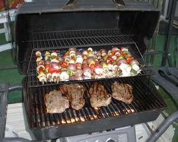
Yakima barbecue grills are a little cleaner and neater, but the grillmeisters talk about similar things, mostly ragging the government that is getting worse on schedule.
The event was the gathering the eclectic elite involved with the care of our Ent friends and the anchoring of floating islands, just the normal sort of gathering of common folk.
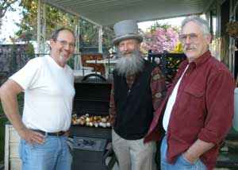
Well now, there were 60 trees planted around an old gravel pit pond next to an arboretum. Well, when you are next to an arboretum, you better be planting trees just to be in good graces with the arboretum trees while walking among them. The old Ents can smell friends and enemies. Heavy branches drop from trees, for no apparent reason, you know.
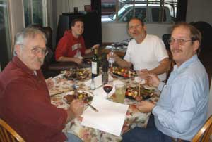
And if your floating island breaks its anchor cable, to bounce around the shores of the lake at whim of the winds, it is time to call in the experts, who are always BarbecueNight folks, quite naturally. Any mere floating island guy might slide a bunch of five gallon buckets of hard concrete down a long cable to anchor the island. Sounds logical to me. Well, that extra cable gets stuck in the mud, while the wind blows the island back and forth for a couple years, to kink and then break the cable. So you call the BarbecueNight folks to handle the emergency of the escaped floating island of course. First they have a barbecue, analyze fine wine and brew, rag the government, comment on Obama's wife's 23 tax paid handmaidens, then go re-anchor the island. They attach a 110 foot long "up line" to a 2,040 block of concrete, and at the other end, to an A-2 polyform float, which is also attached to a 170 foot long "top line". Then they attach the block under a float bag, and tow it out into the middle of the lake. Then they cut the rope between the concrete block and the float bag. Excitement. The up line races across the top of the lake, at the speed of a falling block of concrete, with the polyform float leaving a wake behind it before it suddenly disappears below the surface, where it is supposed to be to be down just below any boat motors that might drive above it. They hang on to the far end of the top line, then tow the floating island to it, and shackle the top line to the island. Then they get on the island, analyze more fine wine and brew, and rag the government of course. All just the normal sort of BBQ thing.You can review the operation on BuchananLake.com, Betty's Island, page 6, in case you need the photos to refine the difference between the words and the actions. Some words get a long way from what they describe, if you can imagine that.
30 September 2010
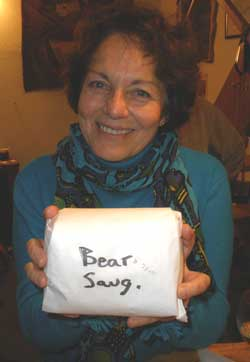
The moose, caribou and bear hunting stories wafted about the event, as usual for this time of year. Well, what do you do when you are after a caribou, and a trophy size caribou bull walks into range, and a medium size bull moose stands up out of the brush, equally in range. Well now, the choice is easy, because the moose offers a lot more moose steaks than the caribou offers caribou steaks, and you are a BarbecueNight person, and the antlers are not edible. But wait, you will be packing the meat out on this particular trip, a long miserable ways through brush with no trails, uphill to the road, and uphill back to the moose. Four heavy loads for a large caribou, and six heavy loads for a medium moose, maybe two loads per day, if you do not dither around. You look at the distance back toward the road. The caribou sees you move your head, and bolts as remarkably fast as a caribou can bolt. The moose looks at the caribou, and you are left with carrying six heavy loads through miserable brush with no trails, for the next few days.
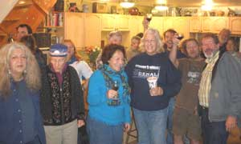
The bear sausage. Well, good sausage starts with good pork butt, to which you add plenty of varied hot peppers, black pepper, garlic, some accents of fennel, some miso, a compendium of other old neglected spices in the cupboard, a half dozen bizarre thoughts, a bear hunting story, a modicum of bear meat, some moose, caribou and rodent meat because that is what the bear was eating, and some hair of the bear to protect against fraudulent bear hunting stories.
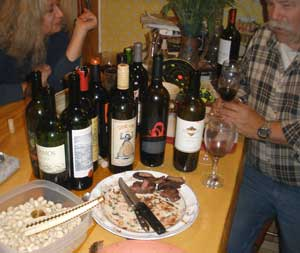
That is moose meat on the plate. It came with one of the moose hunting stories.
Notice the bottle of Gatekeeper, and Solaris. We were gracing the moose and bear with fine wine, and a lot of wine as usual. You don't have to show up with moose or bear, but a bottle of fine wine will get your bottle through the door every time. Just follow it in.
Notice also the artwork in the bowl of pistachios, an old style Siberian pipe made from ivory and gold, by a local artist who shows up at BarbecueNight on occasion, such as this occasion. Sometimes the artists outnumber the hunters at BBQnight, but never the story tellers because they just add to the story tellers.
A few Sarah Palin stories accompanied a staccato of resulting laughter rudely interrupting the other stories at various spots around the kitchen counter. Finally, somebody different stumbles into the political scene, and they just copy the repugnant DemocanRepublicrats with a slightly different arrangement of adjectives. Well, the Palin jokes add a new veneer to the US political scene, albeit of the same old pattern. "The other guy is to blame. Send the Army to kill them. Imprison the survivors. Torture the helpless prisoners. Make those people do what we say they should do." Palin and her DemocanRepublicrat thugs are a good comedy to thinking people, and worshiped (voted for) by those who crave power over YOU.
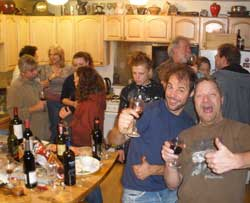
The guys who had to be most noticeable to the camera were telling stories about the ice caving they were going to do. And it was going to be that grand. Well, they can get away with such expressions because ice caving in the local glaciers often is a significant adrenalin producing adventure, especially where these guys go, into the glaciers where the river is still coming out of the ice, because they do not have the good sense to wait for all the water to freeze, so they occasionally get too close to the edge of the ice on the boulder-strewn river just outside the glacier cave entrance, and fall into the water, and barely scramble back out, and have to stand in the snow and take all their clothes off very quickly, to survive, and dry off, and put half their wrung-out wet clothes back on, and run or ski fast back to the car, so they can tell ice caving misery stories, just to one-up the caribou hunter stories for BBQnight. Its a good thing they show up with wine, because glacier ice does not grill very well no matter how much pepper and soy sauce you use.
The Alaskans talking about Alaska independence no longer discuss strategy. Bush, Obama, their "perpetual war" military generals, and the Federal Reserve Banksters printing US money into worthlessness, have priced themselves out of the market for government. The States will all depart as suddenly as all the Soviet Republics departed the Soviet Union.
That's it. That's it. Anyone else would have to buy the ticket all the way to planet Earth to watch the comedy of the humans.
23 September 2010
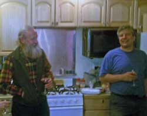
The wine selection was superlative. There were comments on the wines that came through the door, with little notice of who was carrying them.Harvest moon. The women left early to attend an ancient harvest moon ceremony and discussions around a bonfire elsewhere. That left the males discussing ice caving, kayaking, climbing, hunting, guns, politics, social issues, some bizarre thoughts and a few subjects that must not be disclosed because they involve classified information known only to BBQnight.com personnel. Hmmm, same stuff the males discuss when the females are there. I wonder what the females are discussing at BBQnight. Might have to talk to them sometime, and ask.
The extensive rock caving, in terra firma instead of ice, in interior Alaska, has now been officially and formally ruined. One of the cavers took one of our dear and benevolent National Park Service rangers on a trip into the caves in one of the National Parks. The caver's comments on the classic abilities and intellectual acumen of the Park Service chap will be omitted in case a Park Service sort is reading this. He would not have been able to get there without the caver, and would struggle to survive in society outside his government cocoon. Outdoor adventurers can now expect volumes of caving regulations, restrictions and caving
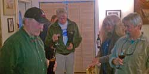
fees, imposed by insatiably greedy, petty power-tripping Washington DC Park Service bureaucrats with extensive caving credentials that they fabricate from words alone, and print on certificate paper, and rubber stamp with official emblems, like the Park Service mountaineering rangers. But things are therefore on schedule, the more the Park Service thugs deny the rights of the people, including war veterans, and make people buy back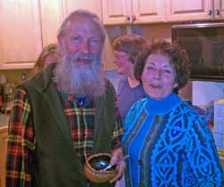
their hard-fought-for RIGHTS by paying permit fees (taxation), the sooner the people will belatedly throw the stinkin feds out of Alaska. Amusingly, a significant percentage of the federal employed Alaskans bad-mouth the stinkin feds more than the rest of us. They are subjected to their pitiable bosses every day. When it happens, the Washington DC sorts will not understand the magnitude and extent of the contempt demonstrated toward them by the common people, as usual in the collapse of every empire.The floating island idea was again floated. So if you make a significant floating island, that is generally oval shaped, as small islands often are, where would you locate the motor? Well, if you make a floating island, of course you are going to motorize it, of course. But oval shapes turn slowly, and the island might be piloted by Saint Joseph Hazelwood, near Bligh Reef. It was suggested that a well be constructed in the bow half of the island, with a pivoting boat motor in it, to propel the island, bow first, in whatever direction one wants to go. The suggestion was immediately adopted. Expect to see it in the design, or the next discussion.
The big blow-out Mountain Dragon Fire Pit party at the Alaskan Alpine Club HQ last week was discussed in detail. The Anchorage delegation of Fairbanks climbers arrived. Alaska adventurers came out of the woods, mountains, cities and caves. The flames licked from the lips of the dragons to the heights of the trees, or at least high enough to back some folks back away from the fire.
16 September 2010
The camera is still kapot. The photos would have been exemplary, primarily of the gourmet food selection. Sometimes chips and dip are the zenith of the production. Sometimes the finest New York chefs would hire the Mob to steal the recipes if the chefs knew that BBQnight.com attracted such food. But because the camera was kapot, there are no pictures, so there are no descriptions of what looked so good. Even the road-kill was well presented.
Notice was given of the big Mountain Dragon Fire Pit party at the Alaskan Alpine Club HQ the following Friday night.
The guest lecturer gave a dissertation on the prior suppressed European and Asian studies that demonstrated clear health and disease treatment benefits of hemp (canabinoids), otherwise known as pot, weed, marijuana, ganja, refer and some not-so-endearing terms. Only the Americans are kept ignorant of such health issues, for political reasons centered on pharmaceutical industry profits. Now consider that all the baby boomers who smoked pot in the 60's, having learned that it is not in the "axis of evil" or an "evil-doer", are reaching the usual array of age-related health difficulties. And they are leaning about the medical benefits of hemp, from the internet that the US DemocanRepublicrat anti-drug Regime cannot control. Anticipate the government-taught kids ragging the old folks for smoking pot. Yes, the circle is being completed. There will be more cases of pot smoking granny or gramps smacking the cops with a cane, and berating the judge in court, for being such an immature, malicious imbecile to take a case against a senior citizen, for more knowledgeably and AFFORDABLY treating his or her health issues than can any judge or pharmaceutical corporation executive, as proven by the judge not smoking pot for his "fill in the blank from a long list of pot-treated ailments presented by doctors and medical research institutions in the several nations more advanced than the Neanderthal American War Regime". Just what do you think might happen as the prison population increases with pot smoking and pot dealing gramps and granny retired professors and other professionals? The only way you can employ prison guards in the US is to find people so dumb, and keep them so dumb, that they cannot figure out what the US prison system is under Prison Industries Incorporated. The government drones cannot let too many intelligent people get into the prisons.
And that was just the dissertation at the grill end of the deck. In by the sink the size of Antarctica ice sheet chunks that break off and float away from the continent was put in the context of history, rather than the context of environmentalist crying "wolf" to get more tax money funding. Remember, here in the circumpolar regions, global warming is on our side. It's us against you. The north end of Greenland used to be ice free, and supporting villages. There is a reason there are fewer people the farther north you go, and warming is the only solution for that reason, be it sun, fossil fuel or nuclear. However, we Alaskans are not extremist. We do not support the "Ice Climbers For A Nuclear Winter". We prefer our warming to come from the nuclear combustion in the Sun, not anything in our back yard.
The big blow-out Mountain Dragon Fire Pit party at the Alaskan Alpine Club HQ the next night was discussed.
A raft of other discussions were discussed, including the raft floating enough soil to grow trees, with a house. So if you float enough soil on floats, to grow trees, and enough space among them for a house that is less noticeable than the trees, do you have a house boat, or do you have a house on an island, in regard to the various jurisdictions of law? More will be presented on the floating island project.
9 September 2010
Whahooo, the web slave walked in the door, after reputedly being in Montana for entirely too long, but more reputably rumored to have been in cyberspace. And it is the web slave who is writing these words, so the real events of BBQnight are going to be again illuminated in, ah, pixels.
Well, black and white pixels, because when these words were belatedly uploaded, it was discovered that all those photos on the camera, were goobered-up in the flash card or the computer translation.
A 99 Burgess Cabernet Magnum was uncorked. It was so good that when the guy who brought the bottle wandered back for another glass, it was too late. A bit of a crowd there, discussing the world economy as perceived by a whitewater kayaker, a sea kayaker, an ice caver, a rock caver, a climber, a snow machiner and a guy from Anchorage. Everybody else was discussing 57 other topics of great and weighty matters of serious concerns upon which the world teeters at the very brink of the abyss.
Unfortunately the above mentioned world economy sorts were not commanding the world economy. Any one of them could figure out that you can't just keep printing more and more paper money to give to insatiably greedy government chaps and their cronies, without the Chinese figuring out that they can easily accumulate all that over-printed paper US script, until they get so much they can threaten to dump it on the world market to achieve a historic Chinese goal, that is, to crash the US dollar down to worthless. The Chinese would then offer the world the Chinese yuan as a hard currency of the most producing nation with a lot of gold in its banks, to become the world economic leader, albeit on schedule. I think it is their turn, and the US just landed on the "Go to Jail for Over-printing Money" square. "Do not pass Go, and do not collect $200".
The grill was replete with moose and the usual pieces of things on a grill. The wine selection was among the best. The non-grill culinary artistry matched the wine selection, and the people were the usual suspects.
Notices of the various solstice parties that were scheduled for the upcoming solstice were noticed.
The guest lecturer over in the side room gave a lecture and computer show on certain outrageous kayaking trips we wish we were on right now.
It was the usual cacophony of brilliant ideas, adventures and ludicrous fabrications, on the deck in the forest of golden autumn leaves and those ever-green spruce needles, chattering squirrels, with sunny dry weather and no mosquitoes.
Page 1 November 06 - April 07
Page 2 May 07 -------- August 07
Page 3 August 07 ----- October 07
Page 4 October 07 ---- December 07
Page 5 January 08 ---- February 08
Page 6 February 08 --- March 08
Page 7 March 08 ------ September 08
Page 8 September 08 - December 08
Page 9 December 08 - May 10
Page 10 September 10 - Present
Links